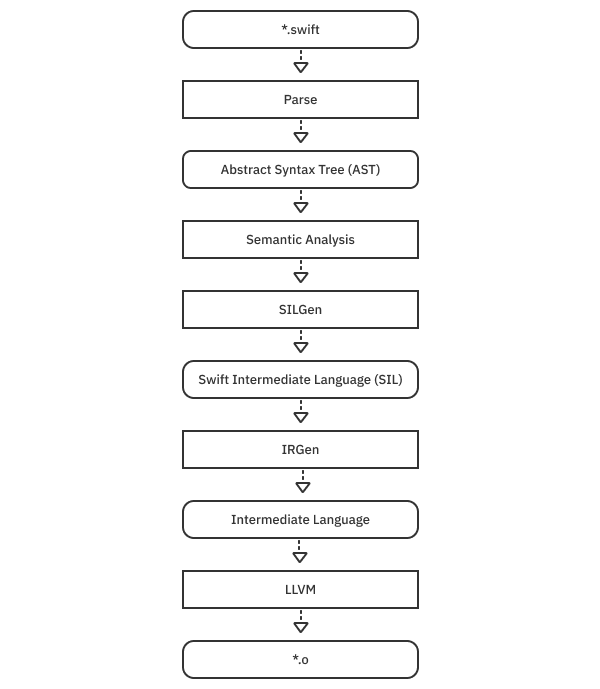

第1章：简介¶
2010年，Chris Lattner在他的笔记本电脑上输入了mkdir shiny，最终成为Swift语言的东西就诞生了。Shiny最初是他在晚上和周末进行的一个个人项目。
该项目有许多雄心勃勃的目标。拉特纳在采访和播客中提到了其中一些，包括。
- 采用现代语言功能，允许新的编程范式。
- 使用自动内存管理来避免垃圾收集的开销。
- 在库中定义尽可能多的语言，而不是在编译器中。
- 使语言的默认值安全，以避免昂贵的未定义行为。
- 使初学者易于学习。
但也许最重要的是，他希望这种新语言是"真实的"。使用它应该感觉像使用一种脚本语言，但又适合于从应用开发到系统级编程的一切。他半开玩笑地说，这被称为"世界的主宰"。
Swift发布¶
Shiny过渡到Swift，并在2014年夏天的苹果全球开发者大会（WWDC）上正式成为现实。它是真实的，因为它开箱即用，与Objective-C完全互通，并且可以利用UIKit等经过考验的框架来构建应用程序。iOS社区迅速地、全心全意地接受了它，几乎没有例外。
第二年的WWDC上又发布了一个地震式的消息。Swift将成为一个开源项目，并扩展到苹果平台之外。苹果在年底兑现了这一承诺，建立了https://swift.org/，这是一个为Linux和最终为Windows等平台提供工具链下载的网站，以及讨论和链接到GitHub上托管的完整源代码的历史（https://github.com/apple/swift）。在这里，苹果和社区将继续公开开发Swift。
Swift.org建立了一个语言演进过程，社区可以提出并实施对该语言的修改。到目前为止，已经提出了311项修改建议，所有这些建议（无论是否接受）都推动了语言的发展。
轻松上手¶
在Swift的设计中，这个单行代码必须作为一个有效的程序进行编译和运行。
print("Hello, world!")
尽管它是一种强类型的语言，可以在编译时捕获各种错误，但你可以写出这样的程序。强大的类型推理和缺乏模板使它使用起来很愉快，感觉几乎像一种脚本语言。
Swift接受了渐进式披露的理念，这意味着你只接触到你需要的语言复杂性。你可以了解诸如模块、访问控制、对象、静态方法、协议、泛型和转义字符等东西，因为它们对你要做的事情是必要的。
此外，Swift允许这一点开箱即用。
let pointer = malloc(100)
defer {
free(pointer)
}
// work with raw memory
Swift致力于成为一种"无边界的语言"或"无限的黑客"，因此它可以支持低级别的C语言和脚本环境（如Python）之间的无缝互操作性。随着语言的发展，与其他环境的互操作性仍然是一个主题。你将在第12章"Objective-C互操作性"中了解与Objective-C的互操作性。
多范式¶
苹果在第一届WWDC上展示了Swift的现代语言功能。在第一个现场演示中，他们在功能上将字符串映射到SpriteKit图像。除了处理UIKit、CoreData和SpriteKit等巨大的、传统的面向对象框架的复杂性，Swift还可以使用map、reduce和filter对数值序列进行功能上的对话。第10章，"高阶函数"，详细介绍了这些。
考虑一下你想加的数字序列的问题，这样你就可以用命令式和函数式进行比较。
你可以使用入门级的playground Multi-paradigm.playground进行学习。这包括一个example()函数，它对例子进行了范围控制，因此你可以在同一个Playground上重复使用相同的变量名。
从添加和运行这个开始：
let numbers = [1, 2, 4, 10, -1, 2, -10]
example("imperative") {
var total = 0
for value in numbers {
total += value
}
print(total)
}
正如这个例子的标题所暗示的，这是将数字相加，并将结果以命令式的方式存储在可变的变量total中。
现在，添加一个函数版本：
example("functional") {
let total = numbers.reduce(0, +)
print(total)
}
这个功能版本简单得令人陶醉。这个方法是描述性的，它允许total成为一个不可改变的值，你不需要担心在以后的代码中改变。经验表明，走功能化路线对你的代码是有好处的。你将在第10章"高阶函数"中进一步了解这些技术。
假设任务是从左到右添加一个数字序列，但当出现一个负数时要停止。一个可能的、功能性的版本可能是这样的。
example("functional, early-exit") {
let total = numbers.reduce((accumulating: true, total: 0))
{ (state, value) in
if state.accumulating && value >= 0 {
return (accumulating: true, state.total + value)
}
else {
return (accumulating: false, state.total)
}
}.total
print(total)
}
这段代码更复杂，但调用了相同的reduce函数，并使用一个元组来控制数值是否累积并保持运行总数。它是可行的，尽管编译器需要努力工作，以弄清提前退出的可能性。
虽然你可以用其他方式在功能上解决这个问题（比如找到子序列然后求和），但你可以用直接的方式势在必得地解决这个问题。
example("imperative, early-exit") {
var total = 0
for value in numbers {
guard value >= 0 else { break }
total += value
}
print(total)
}
这段代码很容易理解，因为它更直接地描述了问题陈述。它还直接映射到了实际的计算机硬件上，所以优化器不需要那么努力工作。
上述代码的一个缺点是，total作为一个可变的变量被泄露出来。然而，由于Swift的变异模型，你可以解决这个问题。
example("imperative, early-exit with just-in-time mutability") {
let total: Int = {
// same-old imperative code
var total = 0
for value in numbers {
guard value >= 0 else { break }
total += value
}
return total
}()
print(total)
}
这段代码将指令性代码包裹在一个闭包中，并调用它来分配外部不可变的total。通过这种方式，Swift为你提供了"在你需要时进行突变"。当局部突变是最自然的解决方案时，它允许你用局部突变来表达算法。
Swift编译器¶
Swift工具链的核心是Swift编译器。它负责将源代码转化为可以链接到可执行文件的目标代码。它在LLVM编译器基础架构上运行，数据流看起来像这样。

把像Swift这样的高级语言，转化为可以在实际硬件上高效运行的机器代码的过程，称为降级。上面显示的圆角矩形是数据，是矩形所代表的阶段的输入或输出。值得从高层次上理解每一个步骤：
- 解析(
Parse)：Swift源代码首先被解析为标记，并被放入抽象语法树或AST。你可以把它想象成一棵树，其中每个表达式都是一个节点。节点还持有源码位置信息，因此，如果检测到错误，节点可以告诉你问题发生的确切位置。 - 语义分析（Sema）：在这一步，编译器使用
AST来分析你的程序的含义。这就是类型检查发生的地方。它将经过类型检查的AST传递给SILGen阶段。 SILGen：这个阶段与以前的编译器管道不同，比如Clang，它没有这个步骤。AST被降低到Swift中间语言（SIL）中。SIL包含基本的计算块，并理解Swift类型、引用计数和调度规则。有两种类型的SIL：原始的和规范的。典型的SIL是由原始SIL通过一组最小的优化通道运行的结果（即使所有的优化都关闭了）。SIL还包含源位置信息，因此它可以产生有意义的错误。IRGen：这个工具将SIL降低到LLVM的中间表示。在这一点上，指令不再是针对Swift的。(每个基于LLVM的都使用这种表示法。)IR仍然是相当抽象的。和SIL一样，IR也是静态单一赋值（SSA）的形式。它将机器建模为具有无限数量的寄存器，使其更容易找到优化方法。它对Swift类型一无所知。LLVM：这最后一步是对IR进行优化，并将其降低为特定平台的机器指令。后端（输出机器指令）包括ARM、x86、Wasm等等。
上图显示了Swift编译器是如何生成目标代码的。其他工具，如源代码格式化器、重构工具、文档生成器和语法高亮器，都可以利用中间结果，如AST，使最终结果更加稳健和一致。
Note
在苹果公司采用LLVM和Clang作为Xcode的编译器技术之前，语法高亮、文档生成、调试和编译都使用不同的解析器。大多数时候，这样做是很好的。但如果它们不同步，事情也会变得很奇怪。
SIL的魅力¶
创建一种保持源语言所有类型语义的中间语言的想法是随着Swift的发展而产生的。与其他LLVM编译器需要采取极其迂回的路线来显示特定的诊断和执行更高层次的优化不同，SILGen可以以可测试的方式直接产生它们。
溢出检测¶
检查一下SIL在行动中的力量。考虑一下下面这个playground上的错误：
多亏了SILGen通道，编译器静态分析（在编译时检查）了你的源代码，发现数字130不适合放在Int8中，而Int8只能到127。
明确的初始化¶
Swift是一种安全的语言，默认情况下，很难访问未初始化的内存。SILGen通过一个叫做明确初始化的检查过程提供保障。考虑一下这个例子：
final class Printer {
var value: Int
init(value: Int) { self.value = value }
func print() { Swift.print(value) }
}
func printTest() {
var printer: Printer
if .random() {
printer = Printer(value: 1)
}
else {
printer = Printer(value: 2)
}
printer.print()
}
printTest()
这段代码编译和运行正常。但是如果你注释掉else子句，编译器会正确地标记出一个错误（变量printer在被初始化之前被使用），这要感谢SIL。这个错误是可能的，因为SIL理解了对Printer的方法调用的语义。
分配和去虚拟化¶
SILGen有助于分配和方法调用的优化。把下面的代码放在一个叫magic.swift的文件中，用你喜欢的纯文本编辑器。
class Magic {
func number() -> Int { return 0 }
}
final class SpecialMagic: Magic {
override func number() -> Int { return 42 }
}
public var number: Int = -1
func magicTest() {
let specialMagic = SpecialMagic()
let magic: Magic = specialMagic
number = magic.number()
}
这段代码可能是你见过的设置数字的最矫揉造作的例子。在函数magicTest中，你创建了一个SpecialMagic类型，然后将其分配给基类引用，并调用number()来设置全局数字。从概念上讲，它使用类的虚拟表来查找正确的函数，该函数返回值为42。
Raw SIL¶
在一个终端窗口中，切换到magic.swift所在的源目录，并运行这个命令：
swiftc -O -emit-silgen magic.swift > magic.rawsil
这将运行带有优化的Swift编译器并创建原始SIL，将其输出到magic.rawsil文件中。
深吸一口气，不要惊慌，在你的文本编辑器中打开magic.rawsil。如果你向下滚动到底部，你会发现这个函数magicTest()的定义：
// magicTest()
sil hidden [ossa] @$s5magic0A4TestyyF : $@convention(thin) () -> () {
bb0:
%0 = global_addr @$s5magic6numberSivp : $*Int // user: %14
%1 = metatype $@thick SpecialMagic.Type // user: %3
// function_ref SpecialMagic.__allocating_init()
%2 = function_ref @$s5magic12SpecialMagicCACycfC : $@convention(method) (@thick SpecialMagic.Type) -> @owned SpecialMagic // user: %3
%3 = apply %2(%1) : $@convention(method) (@thick SpecialMagic.Type) -> @owned SpecialMagic // users: %18, %5, %4
debug_value %3 : $SpecialMagic, let, name "specialMagic" // id: %4
%5 = begin_borrow %3 : $SpecialMagic // users: %9, %6
%6 = copy_value %5 : $SpecialMagic // user: %7
%7 = upcast %6 : $SpecialMagic to $Magic // users: %17, %10, %8
debug_value %7 : $Magic, let, name "magic" // id: %8
end_borrow %5 : $SpecialMagic // id: %9
%10 = begin_borrow %7 : $Magic // users: %13, %12, %11
%11 = class_method %10 : $Magic, #Magic.number : (Magic) -> () -> Int, $@convention(method) (@guaranteed Magic) -> Int // user: %12
%12 = apply %11(%10) : $@convention(method) (@guaranteed Magic) -> Int // user: %15
end_borrow %10 : $Magic // id: %13
%14 = begin_access [modify] [dynamic] %0 : $*Int // users: %16, %15
assign %12 to %14 : $*Int // id: %15
end_access %14 : $*Int // id: %16
destroy_value %7 : $Magic // id: %17
destroy_value %3 : $SpecialMagic // id: %18
%19 = tuple () // user: %20
return %19 : $() // id: %20
} // end sil function '$s5magic0A4TestyyF'
本节选是三行函数magicTest()的SIL定义。标签bb0代表基本块0，是一个计算单位。(如果你有一个if/else语句，就会有两个基本块，bb1和bb2为每个可能的路径创建）。%1、%2等值是虚拟寄存器。SIL是单一静态赋值的形式，所以寄存器是无限的，永远不会重复使用。还有许多小细节，对这里的讨论并不重要。通过阅读，你应该大致看到它是如何分配、赋值、调用和取消对象的。这表达了Swift语言的全部语义。
Canonical SIL¶
Canonical SIL包括优化，包括用-Onone关闭优化时的最小优化通道集。运行这个终端命令：
swiftc -O -emit-sil magic.swift > magic.sil
这个命令创建了文件magic.sil，其中包含了规范的SIL。滚动到文件的末尾，找到magicTest()：
// magicTest()
sil hidden @$s5magic0A4TestyyF : $@convention(thin) () -> () {
bb0:
%0 = global_addr @$s5magic6numberSivp : $*Int // user: %3
%1 = integer_literal $Builtin.Int64, 42 // user: %2
%2 = struct $Int (%1 : $Builtin.Int64) // user: %4
%3 = begin_access [modify] [dynamic] [no_nested_conflict] %0 : $*Int // users: %4, %5
store %2 to %3 : $*Int // id: %4
end_access %3 : $*Int // id: %5
%6 = tuple () // user: %7
return %6 : $() // id: %7
} // end sil function '$s5magic0A4TestyyF'
这个摘录比原始SIL要简洁得多，尽管它代表了同样的事情。主要的工作是将整数字头42存储到全局地址store %2 to %3 : $*Int。没有类被初始化或去初始化，也没有任何虚拟方法被调用。当你听到structures使用堆栈，classes使用堆时，请记住这只是一种概括。
在Swift中，所有东西一开始都是在堆上初始化的，而SIL分析可以把分配移到堆上，甚至完全摆脱它。虚拟函数的调用也可以通过优化过程进行去虚化，直接调用甚至内联。
实现一个语言特性¶
Swift将尽可能多的特性的实现从编译器中推到了库中。例如，你可能知道，Optional只是一个通用枚举。事实是，大多数基本类型都是标准库的一部分，而不是在编译器中烘烤。这包括Bool、Int、Double、String、Array、Set、Dictionary、Range等等。在2020年10月Lex Fridman的采访中，Lattner说他把这种表达式的库设计视为编程语言中*美丽的特征。
要了解Swift的一些更深奥的功能，或者对一些基本的功能有更好的体会，一个很好的方法就是自己去做--建立一个类似语言的功能。你现在就可以这样做。
构建ifelse¶
在这个编码实验中，你将实现一个ifelse()语句，就像统计编程语言R使用的那样。这个函数看起来像这样：
ifelse(condition, valueTrue, valueFalse)
它和Swift的三元运算符condition ? valueTrue : valueFalse做的是同样的事情，有些人因为反对美学而不喜欢它。
先把这个输入到一个playground上：
func ifelse(condition: Bool,
valueTrue: Int,
valueFalse: Int) -> Int {
if condition {
return valueTrue
} else {
return valueFalse
}
}
let value = ifelse(condition: Bool.random(),
valueTrue: 100,
valueFalse: 0)
这个解决方案有什么问题？也许没什么。如果它解决了你的问题，而且你只用Int工作，这甚至可能是一个好地方，可以停下来。但是因为你想为大家做一个通用的语言功能，你可以做几个改进。首先，完善一下界面：
func ifelse(_ condition: Bool,
_ valueTrue: Int,
_ valueFalse: Int) -> Int {
condition ? valueTrue : valueFalse
}
let value = ifelse(.random(), 100, 0)
对于一个要经常使用的语言结构，删除参数标签是有意义的。通配符标签_为你提供了移除它们的能力。为了简洁起见，用不那么啰嗦的三元运算符来实现这个功能。(你可能想知道为什么你不应该使用骆驼大写的名字ifElse。关键字是简单的连接，如typealias和associatedtype，这是有先例的，所以要保持原来的R语言命名。）
下一个明显的问题是，这只对Int类型有效。你可以为你想要的重要类型用大量的重载来代替它。
func ifelse(_ condition: Bool,
_ valueTrue: Int,
_ valueFalse: Int) -> Int {
condition ? valueTrue : valueFalse
}
func ifelse(_ condition: Bool,
_ valueTrue: String,
_ valueFalse: String) -> String {
condition ? valueTrue : valueFalse
}
func ifelse(_ condition: Bool,
_ valueTrue: Double,
_ valueFalse: Double) -> Double {
condition ? valueTrue : valueFalse
}
func ifelse(_ condition: Bool,
_ valueTrue: [Int],
_ valueFalse: [Int]) -> [Int] {
condition ? valueTrue : valueFalse
}
很容易看出这没有规模。当你认为你已经完成了，你的用户又想支持另一种类型。而且每个重载都会重复实现，这不是很好。
作为一个替代方案，你可以使用Any类型，一个类型消除的，任何Swift类型的替身：
func ifelse(_ condition: Bool,
_ valueTrue: Any,
_ valueFalse: Any) -> Any {
condition ? valueTrue : valueFalse
}
let value = ifelse(.random(), 100, 0) as! Int
这段代码适用于任何类型，但有一个重要的注意事项，你必须投回你想要的原始类型。使用Any类型并不能保护你不发生像这样混合类型的情况：
let value = ifelse(.random(), "100", 0) as! Int
这个语句在测试中可能有效，但在生产中如果随机数为真则会崩溃。Any是超级通用的，但使用起来也很容易出错。
一个更好的答案，你可能已经猜到了，就是使用泛型。把代码改成这样：
func ifelse<V>(_ condition: Bool,
_ valueTrue: V,
_ valueFalse: V) -> V {
condition ? valueTrue : valueFalse
}
// let value = ifelse(.random(), "100", 0) // doesn’t compile anymore
let value = ifelse(.random(), 100, 0)
这种设计既保留了类型信息，又约束了参数的类型与返回类型相同。泛型是Swift语言的重要组成部分，以至于第4章"泛型"专门讨论了它们。你将在本书中使用泛型。
Note
Swift标准库广泛使用泛型来消除代码的重复，如上面的例子。在某些情况下，泛型系统还不够强，库使用一个python脚本，gyb（或generate-your-boilerplate），来生成一系列类型的代码。
推迟执行¶
这个功能看起来不错，但它仍然没有完成。考虑一下这个用法：
func expensiveValue1() -> Int {
print("side-effect-1")
return 2
}
func expensiveValue2() -> Int {
print("side-effect-2")
return 1729
}
let taxicab = ifelse(.random(),
expensiveValue1(),
expensiveValue2())
如果你运行这个，你会看到两个函数总是被调用。作为一种语言特性，你希望只有你使用的表达式被评估。你可以通过传递一个延迟执行的闭包来解决这个问题：
func ifelse<V>(_ condition: Bool,
_ valueTrue: () -> V,
_ valueFalse: () -> V) -> V {
condition ? valueTrue() : valueFalse()
}
这段代码推迟了执行，但改变了你需要调用函数的方式。现在，你必须像这样调用它：
let value = ifelse(.random(), { 100 }, { 0 })
let taxicab = ifelse(.random(),
{ expensiveValue1() },
{ expensiveValue2() })
只有一个函数被调用，但必须用一个闭包来包裹你的参数是相当令人讨厌的。幸运的是，Swift有一个方法来解决这个问题：
func ifelse<V>(_ condition: Bool,
_ valueTrue: @autoclosure () -> V,
_ valueFalse: @autoclosure () -> V) -> V {
condition ? valueTrue() : valueFalse()
}
let value = ifelse(.random(), 100, 0 )
let taxicab = ifelse(.random(),
expensiveValue1(),
expensiveValue2())
用@autoclosure来装饰参数类型会使编译器自动将参数包裹在一个闭包中。这种改变使调用站点恢复到原来的状态，并且仍然推迟执行，所以只有使用的参数才会被评估。
使用可能失败的表达式¶
事情进展顺利，但还有一个小问题。如果你想使用可能失败的表达式怎么办？
考虑一下下面的例子：
func expensiveFailingValue1() throws -> Int {
print("side-effect-1")
return 2
}
func expensiveFailingValue2() throws -> Int {
print("side-effect-2")
return 1729
}
let failableTaxicab = ifelse(.random(),
try expensiveFailingValue1(),
try expensiveFailingValue2())
这就不能编译了，因为autoclosures并不期待一个抛出的闭包。如果没有编译器的特别帮助，你可能会想到通过创建另一个类似这样的函数版本来解决这个问题：
func ifelseThrows<V>(_ condition: Bool,
_ valueTrue: @autoclosure () throws -> V,
_ valueFalse: @autoclosure () throws -> V) throws -> V {
condition ? try valueTrue() : try valueFalse()
}
let taxicab2 = try ifelseThrows(.random(),
try expensiveFailingValue1(),
try expensiveFailingValue2())
这段代码可以工作，但情况比最初描述的要糟糕。假设只有第一个表达式抛出，或者假设只有第二个表达式抛出。你需要为同一个函数做四个版本来处理所有的情况吗？因为关键字throws并没有出现在Swift函数的签名中，所以你需要有四种ifelse，名字都略有不同。
幸运的是，有一个更好的方法。你可以写一个版本的函数来处理所有这些情况：
func ifelse<V>(_ condition: Bool,
_ valueTrue: @autoclosure () throws -> V,
_ valueFalse: @autoclosure () throws -> V) rethrows -> V {
condition ? try valueTrue() : try valueFalse()
}
关键是使用rethrows。Rethrows将任何失败的闭包的错误传播给调用者。如果没有一个闭包参数抛出，它就推断出该函数是不抛出的，不需要用try来标记。
通过这个单一的版本，所有这些变体都能工作：
let value = ifelse(.random(), 100, 0 )
let taxicab = ifelse(.random(),
expensiveValue1(),
expensiveValue2())
let taxicab2 = try ifelse(.random(),
try expensiveFailingValue1(),
try expensiveFailingValue2())
let taxicab3 = try ifelse(.random(),
expensiveValue1(),
try expensiveFailingValue2())
let taxicab4 = try ifelse(.random(),
try expensiveFailingValue1(),
expensiveValue2())
你已经接近完成ifelse了。你不想付出额外的抽象层的代价，而且实现永远不会改变，所以把这个函数标记为@inlinable是有意义的。这个新增的关键字向编译器提示，方法的主体应该直接包含在客户端代码中，而不需要调用函数的开销。
@inlinable
func ifelse<V>(_ condition: Bool,
_ valueTrue: @autoclosure () throws -> V,
_ valueFalse: @autoclosure () throws -> V) rethrows -> V {
condition ? try valueTrue() : try valueFalse()
}
Note
私下里还有更强的@inlinable形式。如果你浏览Swift的源代码，你会看到这些。其中一个属性是@_transparent，它总是"看穿"底层实现。它甚至会内联-Onone，并且在调试时不包括堆栈框架。请看这里的细节。https://github.com/apple/swift/blob/main/docs/TransparentAttr.md
性能¶
用优化编译器编写程序的一个很酷的事情是，使代码清晰和可维护的抽象成本往往是没有或接近于没有的。
要看你在这里是怎么做的，把这段代码放到一个叫ifelse.swift的文本文件里：
@inlinable
func ifelse<V>(_ condition: Bool,
_ valueTrue: @autoclosure () throws -> V,
_ valueFalse: @autoclosure () throws -> V) rethrows -> V {
condition ? try valueTrue() : try valueFalse()
}
func ifelseTest1() -> Int {
if .random() {
return 100
} else {
return 200
}
}
func ifelseTest2() -> Int {
Bool.random() ? 300 : 400
}
func ifelseTest3() -> Int {
ifelse(.random(), 500, 600)
}
拿着这段代码，用这个命令直接在上面运行编译器：
swiftc -O -emit-assembly ifelse.swift > ifelse.asm
再做一次深呼吸，打开汇编文件。请记住，这些汇编文件包含了大量的围绕调用惯例和入口点的模板仪式。不要让这一点阻碍你去看。修剪掉不需要的东西，这里是好的部分：
_$s6ifelse0A5Test1SiyF:
:
callq _swift_stdlib_random
testl $131072, -8(%rbp)
movl $100, %ecx
movl $200, %eax
cmoveq %rcx, %rax
:
_$s6ifelse0A5Test2SiyF:
:
callq _swift_stdlib_random
testl $131072, -8(%rbp)
movl $300, %ecx
movl $400, %eax
cmoveq %rcx, %rax
:
_$s6ifelse0A5Test3SiyF:
:
callq _swift_stdlib_random
testl $131072, -8(%rbp)
movl $500, %ecx
movl $600, %eax
cmoveq %rcx, %rax
:
这些是你的三个测试功能的装配说明。对你来说，它可能看起来像乱码。重要的是，对于ifelseTest1()、ifelseTest2()和ifelseTest3()来说，这都是相同的乱码。换句话说，这三种编写代码的方式的抽象性惩罚为零。选择你认为最漂亮的方式。
现在，对上述汇编进行解密，callq指令调用函数以获得一个随机数。接下来，testl指令得到随机数的返回值（位于64位基指针-8所指向的地址）。它将其与131072进行核对，也就是0x20000或第17位。如果你看一下Bool.random的Swift源代码，你会发现这个：
@inlinable
public static func random<T: RandomNumberGenerator>(
using generator: inout T
) -> Bool {
return (generator.next() >> 17) & 1 == 0
}
这就解释了131072的神秘之处：它在一条指令中完成了对第17位的移位、屏蔽和测试。接下来，函数的两个可能的结果值被移动（使用movl指令）到寄存器cx和ax。前缀e代表寄存器的32位扩展版本。其余的位被扩展为零，以填充所有的64位。最后，"有条件的移动 "或cmoveq指令使用先前测试指令的结果，将cx寄存器移动到ax寄存器中。rcx和rax的前缀r表示你使用寄存器的全部64位。
Note
符号_$s6ifelse0A5Test1SiyF:是ifelse.ifelseTest1() -> Int的唯一符号名。(前面的ifelse. 是模块名，或者在这里是文件名。)链接器需要为你程序中所有的外部符号提供简短的、有保证的唯一名称。你可以在这里找到mangling的规范： https://github.com/apple/swift/blob/main/docs/ABI/Mangling.rst. 你也可以运行在/Library/Developer/CommandLineTools/usr/bin/中找到的命令行工具swift-demangle。例如，swift-demangle _\$s6ifelseAAyxSb_xyKXKxyKXKtKlF对应的是符号ifelse.ifelse<A>(Swift.Bool, @autoclosure () throws -> A, @autoclosure () throws -> A) throws -> A。
这就完成了对ifelse的讨论和实现。如果你提出Swift核心团队成员John McCall提出的问题，那就最好不过了。"这是一个能够为自己付出代价的抽象吗？" 在这种情况下，可能不是。三元运算符已经存在，它做的事情基本上是一样的。尽管如此，通过这个例子，希望能提醒你在构建类似语言的功能作为库的一部分时，Swift提供的一些能力。
关键点¶
这一章谈到了构建Swift语言的一些动机，以及Swift的库和编译器是如何一起工作来做出强大的抽象的。以下是一些关键的收获：
Swift是一种多范式语言，支持许多编程风格，包括命令式、函数式、面向对象、面向协议和通用范式。Swift旨在挑选合理的默认值，使未定义的行为难以被触发。Swift拥护渐进式披露的理念。你只需要在需要时学习更高级的语言功能。Swift是一种通用的编程语言，具有强大的类型系统和类型推理。Swift的大部分内容是在其表现力强的标准库中定义的，而不是作为编译器的一部分。Swift的编译器阶段是解析、语义分析、SILGen、IRGen和LLVM。- 源码位置信息驻留在
AST和SIL中，使得更好的错误报告成为可能。 SIL是一种低级别的描述，使用以SSA形式编写的基本指令块。它理解Swift类型的语义，这使得许多优化是纯LLVM IR无法实现的。SIL有助于支持明确的初始化、内存分配的优化和devirtualization。Any是Swift中最终的类型清除，但使用起来可能很容易出错。泛型通常是一个更好的选择。- 传递一个闭包作为参数，返回一个值，将参数的评估推迟到函数的主体中。
@autoclosure是实现捷径行为的一种方式，因为它推迟了表达式参数的执行。rethrow是一种传播来自闭包的错误的方法，这些闭包可能被标记为throws，也可能没有。@inlinable提示编译器，一个函数的指令应该被释放到调用位置。- 编译器消除了你的源代码的大部分（如果不是全部）抽象成本。如果不同的源代码有相同的语义，编译器可能会发出相同的机器指令。
- 抽象应该为自己付出代价。在创造新的语言特性之前，请认真思考。
接下来去哪？¶
本章的大部分内容讨论了Swift编译器如何通过SIL将高级类型和语句降低到高效的机器表示。降级是一个激烈的（和小众的）话题。如果你有兴趣了解更多，可以看看编译器工程师Slava Pestovhttp://bit.ly/slava-types的这篇略显陈旧但仍然相当相关的博文。这是一篇对Swift类型和降低的深入的研究，所以你可能想在处理它之前先阅读本节关于类型、协议和泛型的其他内容。
Swift编译器团队的成员，包括Chris Lattner、Slava Pestov、Joseph Groff、John McCall和Doug Gregor，都出现在LLVM会议关于编译器实现的讲座中。一个好的开始是http://bit.ly/swift-sil。
最后，看看在线工具https://godbolt.org，它可以让你在网络浏览器中编辑许多不同语言（包括Swift）的代码，看看它们是如何降低的。你可能想用编译器标志O、Onone、Ounchecked进行实验。在网页界面的输出设置下，你可能想取消勾选Intel asm syntax，以获得本章中的汇编输出。